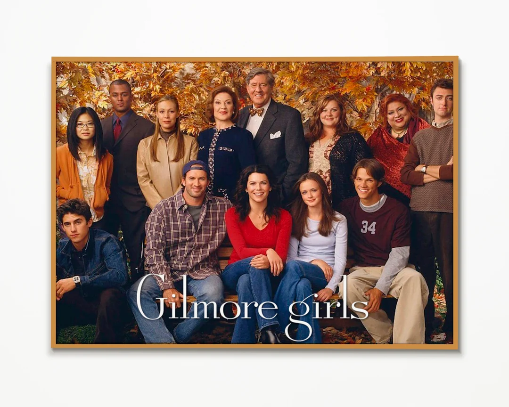
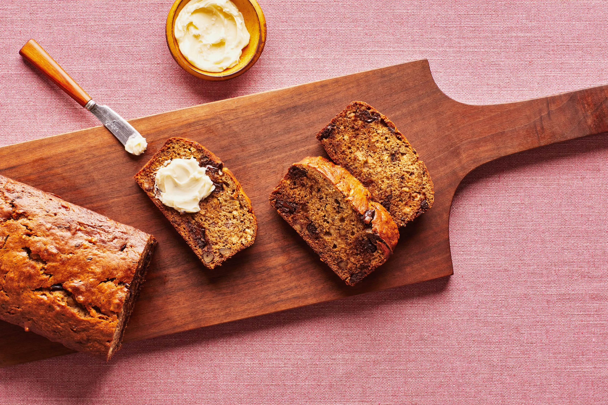

During my free time, I enjoy trying new recipes that are healthy and cozy to eat. I also enjoy working out and getting my steps in, sometimes outdoors and other times at the gym. I'm currently rewatching one of my comfort shows, "Gilmore Girls," to destress from assignments and exams. :)
 | Day | Activity |
|---|---|
| Sunday | Cook for the week |
| Tuesday | Watch an episode after class |
| Thursday | Go to gym before class |
About Me | My Love for Cats | My Dream Life | My Christmas Wishlist